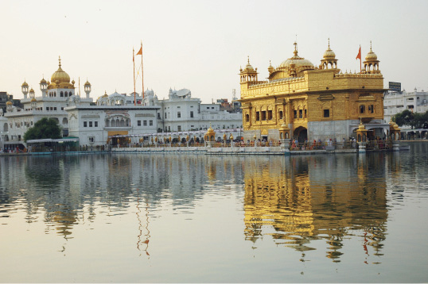

İRAN, 9 Temmuz
Zaman durdu. Kafamı toplayıp yazmaya çalışacağım. Bir süre İnci’yle konuşmadan durduk kaldık. Yorgunuz. Saat ilerledi. Uykum bastırmış olmasına rağmen muhakkak bir şeyler karalamalıyım. Yazmazsam yarın bunları bir rüya gibi hatırlayabilirim ve belki kendim de inanamam. Kara Ziyaeddin şehrindeyiz.
Hava kararmadan önce otele geri döndük. Neredeyse Türkiye’de satılan dönerin aynısını bulduğumuz için de çok sevindik.

Hindistan, Amritsar
Tac mahal. Hiç bitmesin istediğiniz anlardan…
Müşterilerin ve lokanta sahibinin ısrarıyla para ödemedik. Bunlar İran’da yaşamayı beklediğimiz şeyler. Kaldığımız otelin çalışanları öyle bir jest yaptılar ki, bizi her şeyden çok etkiledi. Bir odada biz, bir odada onlar var. “Varmış” demeliyim aslında. Çünkü orada olduklarını bilmiyorduk. Otelde tadilat yapılıyor, ortalık karman çorman. Müşterinin kalabileceği sadece bir tane odaları olduğunu söylediler.
Karşımızdaki odada bisikletlerimiz var. Diğer odalar zaten yıkık dökük, koridorda eski halılar, atılacak eski mobilyalar. Bir yandan boyanıyor diğer yandan elektrik, su sistemi yenileniyor otelin. Duvarlar delik deşik. Pek tekin bir yer gibi görünmüyor. Neyse, sabah ola hayrola şeklinde zaman geçirmeye çalışıyoruz.
Ufak tefek işlerle uğraşırken birden kapı çalındı. Otelde başka kimse yok sanıyorduk. Bizi otele yerleştiren adam, gece kimse kalmayacak demişti. Bu yüzden bahçenin ışıklarının nereden yanacağını, dışarıdaki tuvaletin yerini göstermişti. Duş zaten yoktu odada, yerini de sormadım. Kendisi aynı bahçedeki başka bir binada uyuyacaktı. Herhangi bir şey olursa uyandırmamızı söylemişti.
Çalınan kapıyı tedirginlikle açtım. Elime çok da küçük olmayan kamp bıçağımı aldım. Kapıyı, arkasına ayağımı koyarak açıyorum. Biri daha fazla yüklenirse açılmasın diye. Aradan baktığımda ilk başta daha da şüphelenmeme yol açan bir görüntüyle karşı karşıyayım: Bir adam. Elinde bir meyve tabağı, parlak bakırdan. Tabakta belki de her meyveden ancak bir tanecik olsa gerek. Tepeleme dolu olmadığı için tabağın en altına yeşil yaprakların dizildiğini görüyorum. Meyvelerin en üstüne birkaç dal maydanoz atılmış. Belki alttaki yapraklar da yeniyor, bilmiyorum. Normal ağaç yaprağını andırıyor.
İçindekileri saymaya gerek yok. Verilen şey sadece iyi niyet ve hoş geldiniz dileği aslında. Farsi oldukları için “Huda hafız” (Allah’a emanet ol) demekten başka bir şey anlamıyoruz söylediklerimizden. İyi niyete karşı iyi niyet, güler yüze karşı güler yüz.
Kapıyı kapatıp elimdeki bıçağı bir kenara fırlatıyorum. Adamla yaptığımız konuşma boyunca elimde kapının arkasında saklamıştım. Kapı kapandıktan sonra sadece o bıçak ve ben kaldım sanki odada. Oda dar gelmeye başladı bana. Bıçak da koca bir hançere dönüştü. Sonunda ağırlığına dayanamayıp elimden atıverdim. Bizi bu kadar tedirgin ve korkak yetiştiren kültüre küfürler ederek. İşte yol, yine bizi sınıyor, yine bir adım daha öteye, yükseğe götürüyor.
Toparlanmaya çalışıyorum. Tabağı boşaltıyoruz. İçine birkaç poğaça koyuyorum. Koridora çıkıyorum, cesaretimi toplayıp kapıyı çalıyorum.
Yine sadece gülümseyerek anlaşmak üzere hazırlıyorum kendimi.
Kapı sonuna kadar açılıyor. Kapıyı açan az önceki adam. Elimdekileri uzatıyorum, İnci de bizim kapımızdan kafasını uzatmış izliyor. İçeride bir de kadın görüyorum. Küçük piknik tüpünde bir şeyler pişiriyorlar. Bu odada yaşıyor olmalılar.
Yine “Huda hafız” ve karşılıklı anlamadığımız birkaç kelimeyle vedalaşıyoruz. Bu kişiler kim bilmiyorum. Şimdi çıkıp sorsam da anlaşamayacağımız için soruların bir faydası yok. Cevapların da bir önemi yok. Ya otelde kalan bizim gibi başka müşteriler ya da tadilat çalışmasını yapan kişiler.
Ya biz kimiz?
Bu yolculuk boyunca biz de uzun süre böyle ufak ve yabancı odalarda ve bazen de birkaç metrekarelik çadırımızda yaşayacağız. Sonunda bu yol elbet bitecek ve evimize döneceğiz. Bursa’daki kocaman evimizde, torbalara sığdırmakta zorlandığımız market alışverişlerimizle ağzına kadar dolu dolabımızla, arabamızla, dev ekran televizyonumuzla, deri koltuklarımızla baş başa kalacağız. Peki, bu kadar cömert olabilecek miyiz?
Herhalde umutsuz vakalar değilsek de, yabancı bir memlekette gece kapımızı çalan birine kapıyı elimizde bıçakla açtığımız için ruhumuzun uzun süre terbiye edilmesi gerekecek kadar yıprandığı açık. Doğu’ya yolculuk, bizim için bu terapiyi kendiliğinden yapar mı acaba? Nefsimizi terbiye etmiş olarak dönebilir miyiz geriye?
İnci benim şaşkınlığıma daha az kapılmış olduğundan, boşaltmadan önce verdikleri tabağın fotoğrafını çekivermiş. Fotoğrafta, tabaktaki az sayıda meyve görünüyor, ama asıl görünmeyen o tabaktan taşan iyilik.
İşte “yolun” öğretisi.